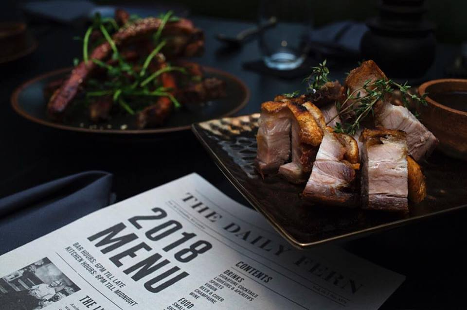
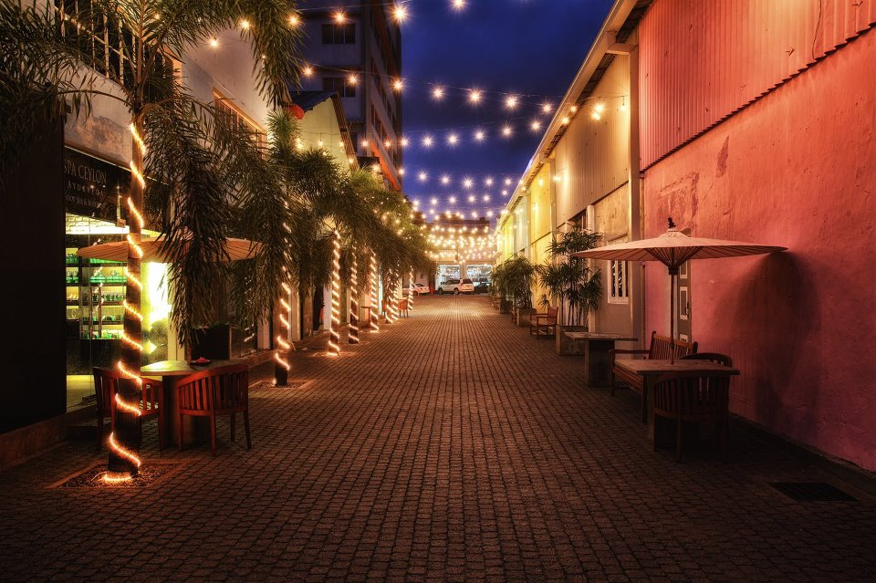
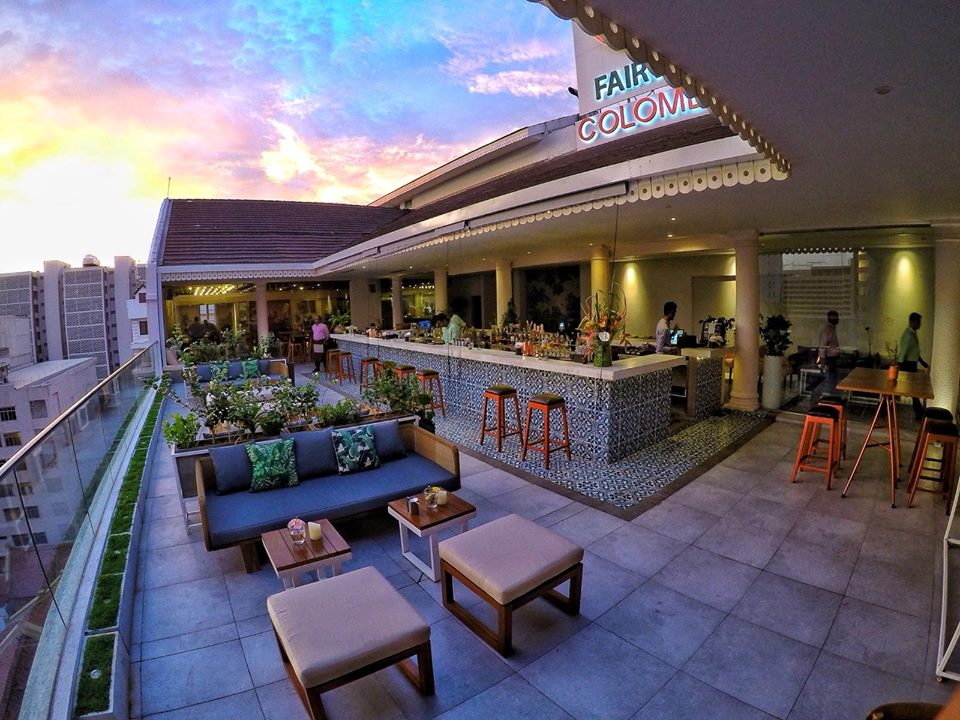
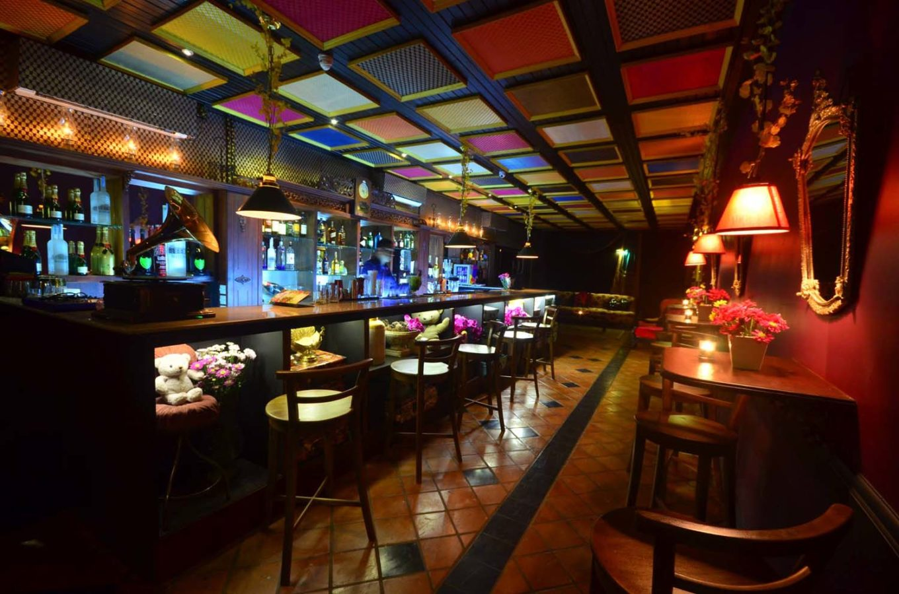
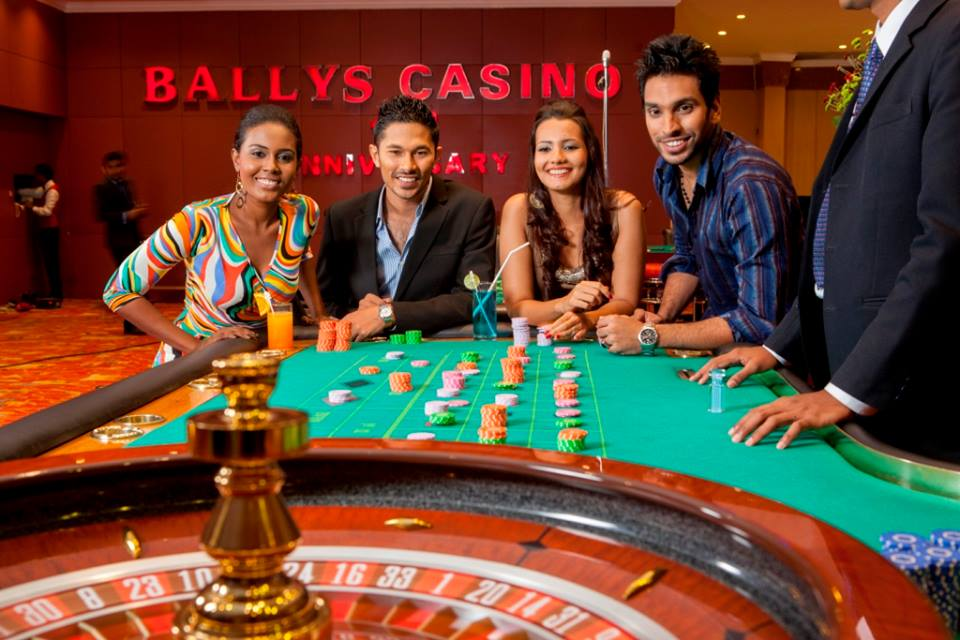
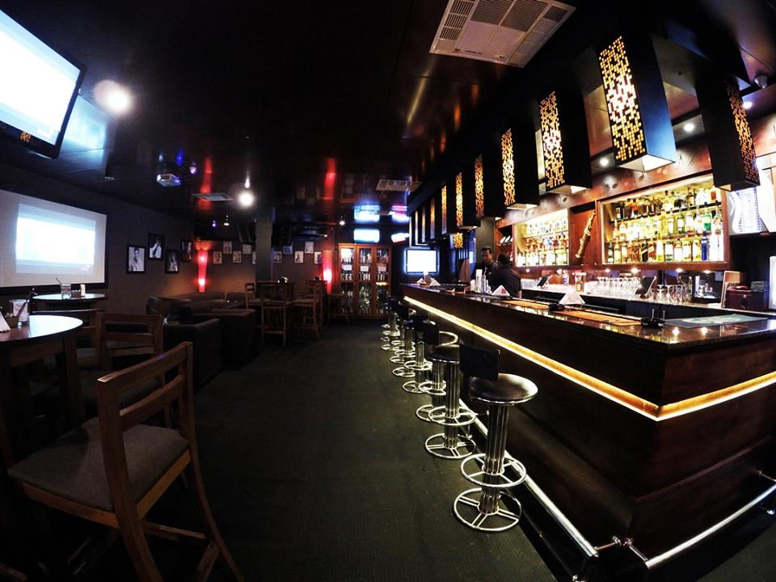
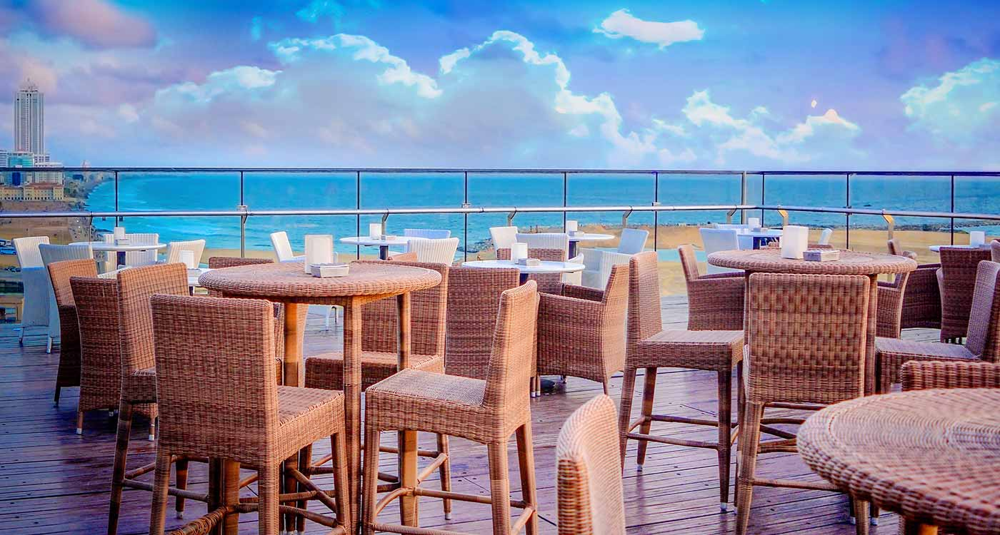
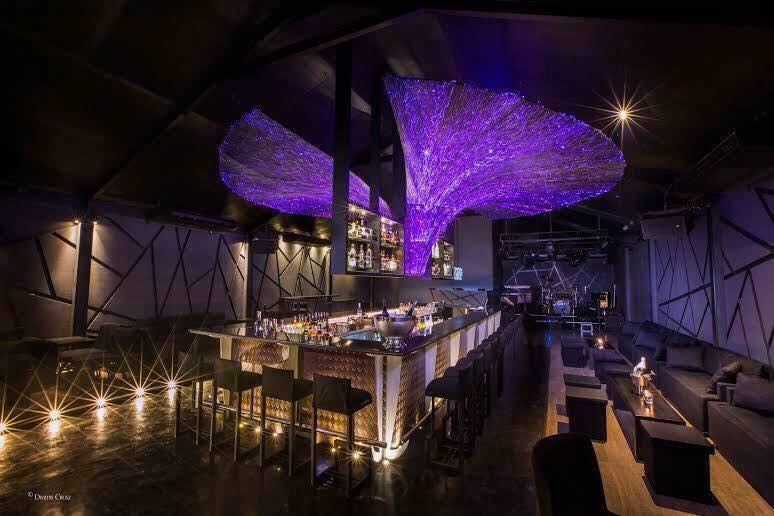

The Colombo Night Life
Some cities come to life in the night, and when it comes to nightlife in Colombo, the city-state practically transforms itself from an ever-so-efficient business hub to a buzzing network of restaurants, bars and night clubs just when the sunsets by its coastal lines. Colombo perhaps is not just a city, it’s an epitome of a lifestyle.
Let the sun go down and you will see the thrill we are about to take you through.
The best nightlife in Colombo is centered around the city center, meaning that you can quite easily have a jump start meal down park street mews, unwind for its live music, head to Love Bar for a cocktail and dance the night away at R&B – all in the same evening.
Convenience is not Colombo’s only strong point either. Its new restaurants are meant for glorious taste buds. Colombo night life brings on a plethora of restaurants to foodies. And yes, the nightclubs and pubs, not to mention some spectacular rooftop bars that keep popping up around the city, as well as all the best venues as we have pointed you in the direction of the liveliest after-dark areas, are your best choices for a night you decide to spend in Colombo.
Here’s few of the best Colombo night life hangout spots you MUST try and the latest additions with no doubt spectacular.
1.Ask for Fern

Can’t think of a better place to have the best experience of Colombo night life, that blends a stunning ambience with favorable indoor and outdoor seating, a range of cocktails that will pleasantly surprise with both their taste AND the the eye candy presentation, each in its own unique way! The FOOD……Whilst they do have dishes that you might associate with pub type comfort food (the crackling pork and the chicken wings are both must-try items). This ain’t your typical pub style menu!! And mostly healthy to boot – we are talking about the food 😉 . For a place that is been open in the most recent past, Ask for Fern has been what everyone asks. So you might have to reserve a table to be on the safe side 😀 . Colombo’s night life’s most recent favorite experience should NOT be missed. Located @ 32B, Sir Mohamed Macan Marker Mawatha, Colombo 03
2.Park Street Mews

Here’s that one vibrant street, which lights up after dark in Colombo. Find your self underneath lights that amaze you with an ambience to kick start your nights with a variety of cuisines at the same place and pubs. Colombo night life always begins here, perhaps the go to place that gets you tuned with the best vibe. Suit your self with the variety of pubs and restaurants that line down the street. Pub hop from live music Curve restaurant with a delightful fusion of continental and tropical cuisine that keeps changing and with the best of vegetarian dishes. Café Francais is the place to awaken your soul with the best cocktails in the town and yes, the bistro and typically French dining. And hey, yes Monsoon- the best South East Asian cuisine so far, and offers you the BYOB option. Hello Middle Eastern lovers, Chambers is your Habibie with the best rated middle eastern dining spot in Park Street it self. And if you are feeling like sushi- Park street got you covered with Kuraku Japanese restaurant and for our very own Italianos, Trattoria offers you the best pizza and pasta in the town. We assure you, park street never fails you. And this is the epicenter of Colombo nightlife. Located @ Park Street Mews Union Place, Colombo 02
3.Botanik

A latest addition to Colombo night life restaurants rooftop bars. Botanik perhaps is located in the best tourist and historical hub – Colombo Fort. Here’s the best rooftop bar with no doubt to beat all the skyline views. It is also a restaurant to take your family to dine fine- with the contemporary bistro type food and alfresco dining. Botanik is a must-go place in Colombo night life as it had the best of city views to offer while you chill by the bar. Nothing beats the Botanik vibe and it only keeps growing. The music heals your soul and so does the amazing collection of their own cocktails and drinks. Colombo night life party goers start their night here for it’s the perfect ambience: so botanical- so good. Located @8th floor rooftop of the Fairway hotel in Colombo Fort.
6. Bally’s Casino

Colombo night life very much missed and felt the absence of its very own people’s club Amuseum. And… Amuseum is back with a bang!! Much bigger, better and promising. Colombo night life’s center of attraction for our club hoppers is the infamous Amuseum. For all those who missed the absolutely hyped up music with the best nightclubs in Colombo, Ameseum opens its warm arms to never fail you and make it the place to have the best night with memories to cherish forever made in Colombo. Don’t miss it. If its Amuseum – its Colombo’s happening club. Located @ 9th floor, green lanka towers, 46-46 nawam mawatha
4. The Love Bar & The Attic Club by Flamingo House
Colombo night life very much missed and felt the absence of its very own people’s club Amuseum. And… Amuseum is back with a bang!! Much bigger, better and promising. Colombo night life’s center of attraction for our club hoppers is the infamous Amuseum. For all those who missed the absolutely hyped up music with the best nightclubs in Colombo, Ameseum opens its warm arms to never fail you and make it the place to have the best night with memories to cherish forever made in Colombo. Don’t miss it. If its Amuseum – its Colombo’s happening club. Located @ 9th floor, green lanka towers, 46-46 nawam mawatha
6. Bally’s Casino

Bally’s is the infamous casino that earned its reputation over the years and still the gaming hub of Colombo at nights. If it’s a casino its always Bally’s–everyone knows and everyone goes. Associated with warmth, respect, hospitality, and trust, Bally’s has earned itself a its loyal clientele. The complimentary delicious snacks and drinks are promising as always. And their buffets and preferably never to be missed. Located @34 D R Wijewardena Mawatha, Colombo 00100, Sri Lanka
7. Sopranos

Sing your favorite song in the best Karaoke pub in the town. Open from Tuesdays to Saturdays from &pm onwards, Sopranos is a classic Karaoke pub that you must experience to remember Colombo night life. Also never miss their famous happy hours from 7-9pm where you sing along with everyone or maybe just you (as you wish- always) while sipping on your favorite drink. Located @ 29, Maitland Crescent, Colombo 07
8. Sky Lounge

Why not kick start with watching the sun set projecting hues of colors in the skyline of Colombo? Go hip with this amazing rooftop bar and lounge where Colombo port, Galle face, Indian ocean and the old parliament behold your sight. Sky lounge perhaps is one of the signature rooftops in Colombo, to start of your night with the best vibe. The place is phenomenal with high-quality cigars, premium champagnes, and their very own signature cocktails. Let’s tune into watching the sunset by the skyline and get our spirits high on views 😉 Located @The Kingsbury rooftop, Colombo
9. Rhythm & Blues

Over so many years and probably one of the most classic and oldest clubs in town and being consistent from the inception. From the name it self Rhythm & Blues is the place to rewind your memories and live your old school memories in one night. Perhaps the best club with the best music that keeps your Colombo night life alive and kicking. We reckon you never miss dropping in to RnB-if you do it’s a loss. Located @ R. A. De Mel Mawatha, Colombo 00500